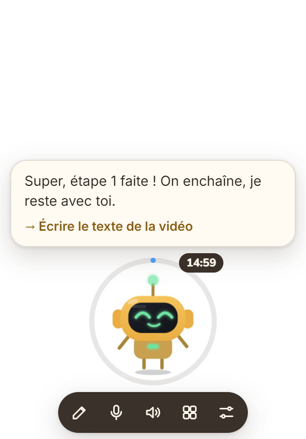
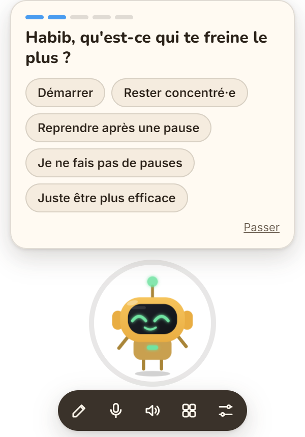
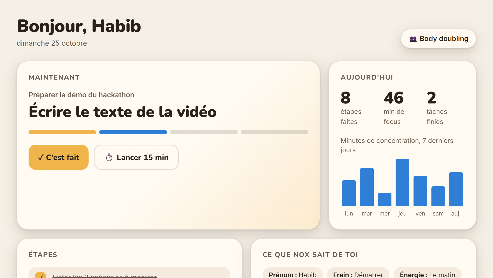

OpenAI DevDay Hackathon · Paris
Un compagnon de bureau pensé pour les cerveaux TDAH. Et pour tous ceux qui commencent mille choses.
Le problème
La solution
Tu dis ce que tu dois faire. Nox découpe, lance le minuteur et te ramène doucement si tu décroches.

Onboarding fondé sur la recherche

Suivi et mémoire
Étapes cochées, minutes de focus, 7 méthodes (Pomodoro, body doubling…). Tout reste sur ton PC, effaçable d'un clic.

Sous le capot
Code open source sur GitHub · lien en commentaire